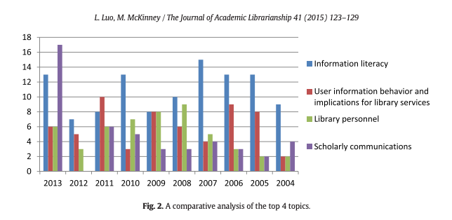
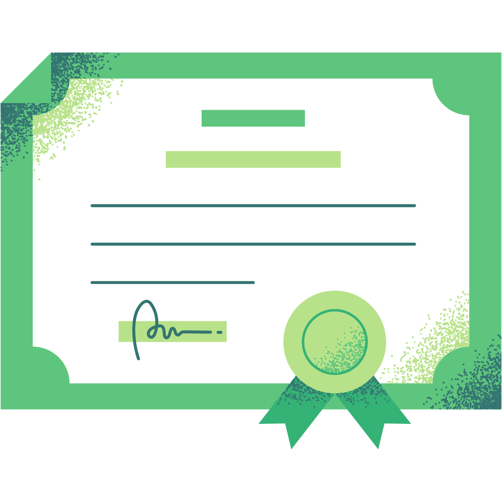

Introduction
This competency concernss librarians' role in assisting patrons' research, as well as LIS professionals' involvement in research within their own field. Many librarians help others conduct research, but only some do research of their own. Regarding the state of research in the LIS field, librarian Turner (2002) is quoted to have "claimed that there is not just a gap between research and practice in LIS, but a 'communication chasm'" (Jamali, 2018, p. 1). In order to improve communication between LIS professionals and to move the field forward, an understanding of research design, synthesis, and evaluation is necessary. Understanding how to conduct LIS research includes: maintaining an awareness of ongoing research, communicating research with other LIS professionals, and conducting research with qualitative and quantitative methods. As evidence to demonstrate my understanding of research design, implementation and evaluation, I have included an interview I conducted, one of my research proposals and questionnaires, and a CITI "research methods" training certificate.
Definitions
Both qualitative and quantitative research methods are useful for gaining insight into the library. Qualitative research consists of in-depth responses to questions which cannot be measured automatically. Quantitative research consists of discrete, selected responses which can be measured automatically, by a program.
Research design is the plan or strategy chosen to act upon a research question. Use of qualitative or quantitative (or both) research methods is determined in research design. Types of research design include:
- correlational: the relationship between two concepts or events
- experimental: "establishing cause and effect" between two events
- descriptive: describing a specific situation
- diagnostic: determine the "underlying cause" of an event
- explanatory: expanding upon existing theories to continue a discussion
Research evaluation and synthesis are methods of demonstrating an awareness of other professionals' research. Evaluation and synthesis are best demonstrated in the literature review section of a research proposal.
Reference for above definitions: (Question Pro, "Characteristics of research design" 2022).
Difference between qualitative & quantitative research
Luo & McKinney (2015) state that "47.6%" of research projects are conducted via questionnaire, which can yield quantitative or qualitative results depending on the questions included. About 20% of research is conducted via interview, which yields qualitative results. Quantitative and qualitative research methods are both useful, yet each has its own set of benefits and drawbacks.
Montgomery (2011) analyzes two studies, one qualitative and one quantitative, conducted at the library where she works. Montgomery found that "each study provided different data regarding our library space and our users," including numerical counts, as well as students' views and explanations (2011, p. 84). Montgomery addresses research quality as well: "both qualitative and quantitative methods provided consistent results giving us a clearer picture of our users and their needs" (p. 84). Among the two studies, Montgomery found the qualitative study (relying on in-person interviews) to have the lower participation rate (79). However, hearing students' expressions provided insight unattainable through counts obtained in the quantitative study (which relied on observation of library space throughout the day) (p. 80). Montgomery's findings and analysis of her own research methods are invaluable for librarians and LIS professionals looking to conduct research themselves.
Where LIS research design & evaluation began
The first documented use of a library questionnaire (left) belongs to Adalbert Blumenschein, an eighteenth-century librarian, who conducted a research project entitled (in English): "Description of Various Libraries in Europe" (Walker, 1994, p. 61). Blumenschein conducted this qualitative research study by visiting libraries, reporting on his observations, and creating a questionnaire for librarians to answer (free responses, either written or spoken, were included in Blumenschein's extensive report).
Walker (1994) states the significance of Blumenschein's work clearly: "For library historians and other library researchers, the work is noteworthy not only because of its size and scope but also because of its approach to methodology and the place it should claim in the history of library research" (61). Blumenschein set the precedent for designing an LIS research project and conducting LIS research in a methodical manner.
Synthesis & Evaluation - LIS research today
Luo & McKinney (2015) conducted a study of LIS research today, including who actively designing and conducting LIS research, and which LIS topics are most often covered. To the left: Table 1 shows that 91.9% of LIS professionals conducting research hold the title "librarian," or work as "LIS faculty" in academic institutions (p. 125). Additionally, in Figure two, from 2004 to 2013, the two most researched library science topics are: scholarly communications and information literacy (p. 126). This does not include topics discussed in other LIS professions, either at other kinds of libraries, or in library-adjacent fields.
[Left] Responses included in Jamali (2018) support the gaps which Luo & McKinney (2015) point out in research design. The phrase "more aspirational than practical" is a concise way to point out why LIS research does not encompass all that it could: LIS research, like other areas of research, is motivated by promises of prestige and scholasticism, rather than fueled by efforts to resolve problems or to share solutions with other LIS professionals (Jamali, 2018, p. 61). In fact, Blumenschein's methodical research design shows a practicality that is sought in research today. Improved research design would result in a more level distribution of LIS research topics that better represent the LIS field. I interviewed Mr. Scott Minor, head librarian of California Northstate University in Elk Grove, California, for INFO 285: Academic Research. Prior to the interview I wrote a set of questions I thought would represent his career, yield different responses, and would maintain an ongoing, engaging conversation. From this interview, I learned about Mr. Minor's values and priorities as a librarian, as well as what made him initially interested in the field. This detailed insight to one librarian's career is highly useful for learning about priorities and values. However, it was relatively easy to secure an interview with Mr. Minor because he has been my supervisor for two years, and he has always been very enthusiastic about my progress in this MLIS program. It would be more difficult and time-consuming to collect multiple interviews for a statistically significant analysis. First, I already knew background information about Mr. Minor, and had an idea of which questions would interest us both. To conduct a successful interview, the LIS professional needs to be skilled at conducting interviews. Additionally, it may be difficult to incentivize LIS professionals to conduct an interview, as they take time to arrange and to conduct. Still, qualitative methods serve an important purpose in LIS research. I included this piece of evidence in this competency to demonstrate my ability to use qualitative research methods as an LIS professional. In this research proposal entitled: "How does open access function in academic librarianship? A multi-institutional survey of open access in the academic library," I introduce a research topic, support my research topic with a literature review, and provide my own survey questionnaire, which I made myself. I included this project in this competency to demonstrate my ability to evaluate and synthesize previous LIS research in a literature review. I also demonstrate my ability to design a research project with a particular population size, sampling design, research method explanation, and data collection design. Finally, with this research proposal, I showed my ability to create a questionnaire yielding quantitative results. In INFO 285: Academic Research Methods, I completed this CITI course. To complete this course, I had to demonstrate my ability to conduct quantitative and qualitative, minimal-risk research. Attached above is the certificate I received upon completion. Prior to conducting quantitative and qualitative research, it is important to understand how to conduct each effectively. These research methods, if learned through trial-and-error and used inappropriately, will produce results that are biased, skewed or misleading. Questions in this exam covered important research concepts, including research design, question formation and writing, survey length, incentives, and distinct answer choices. By learning the answers to these questions and passing this exam to get this certificate, I was much more informed when making my survey questionnaire and conducting my interview. Other LIS professionals wanting to do research would benefit from taking this quick exam to learn how to do research. I included this piece of evidence in this competency to show that I have received a passing grade on my understanding of both quantitative and qualitative research methods in this CITI program. For evidence demonstrating my understanding of research design, methods, synthesis and evaluation, I included an interview I conducted, a research proposal and questionnaire I created, and a research training session I passed. I focused on LIS research to demonstrate how LIS professionals can lead patrons by example. As LIS professionals, we are supposed to assist patrons with their own research projects, yet within our field, ongoing research does not encompass all that it should. Many LIS professionals have stated that existing LIS research does not offer practical solutions for ongoing issues, or that it does not encompass their LIS professional setting. In the future, I intend to contribute to LIS research for two reasons: first to maintain the research skills I plan to teach to library patrons, and second to help make LIS research more encompassing, which will push the LIS field forward. (2022). Research Design. Question Pro. https://www.questionpro.com/blog/research-design/ Jamali, H.R. (2018). Use of research by library and information professionals. Library Philosophy & Practice, 1-10. Link. Luo, L., & McKinney, M. (2015). JAL in the past decade: A comprehensive analysis of academic library research. (2015). The Journal of Academic Librarianship 41, 123-129. http://dx.doi.org/10.1016/j.acalib.2015.01.003 Montgomery, S.E. (2011). Quantitative vs. qualitative-Do different research methods give us consistent information about our users and their library space needs? Library & Information Research 35(111), 73-86. DOI: 10.29173/lirg482 Walker, T.D. (1994). The first use of a library questionnaire: Adalbert Blumenschein's eighteenth-century study of European libraries. Library & Information Science Research 16, 59-66. DOI: 10.1016/0740-8188(94)90042-6. Evidence
1) Qualitative research: Librarian interview
Interview with an academic librarian
2) Project: Research proposal
Research proposal
3) Certificate: Completion of CITI 'Minimal risk research' Program course
 CITI Program Certificate
Conclusion
References